Best Match Results with Notre Dame
The goal of the project is to do a local feature matching. The pipeline is
1. compute the horizontal and vertical derivatives of the image Ix and Iy
I use Matlab function
[imagex, imagey] = imgradientxy(image);
2. Computer the three images corresponding to the outer products of these gradients
3. Convolve each image with a larger Gaussian
I use Matlab function
large = fspecial('Gaussian');
imagexf = imfilter(imagex2, large);
4. Compute a scalar interest measure
R = det(H) - k * (trace(H) ^ 2) Apply the function to each dot in the matrix
5. Find local maxima
I use Matlab function imregionalmax to find local maxima.
matr = imregionalmax(Rs);
[value, I] = sort(Rs(matr), 'descend');
nRs = matr .* Rs;
threshold = value(5000);
[x, y] = find(nRs > threshold);
I used a SIFT-like feature. I calculate the gradient of the image with
[mag, dir] = imgradient(image);
[aDes] = hist(dir, i, j, s)
I implemented "ration test" to find matches and get top 100 points at the end of the step.
confidences = confidences(1:100);
matches = matches(1:100, :);
| 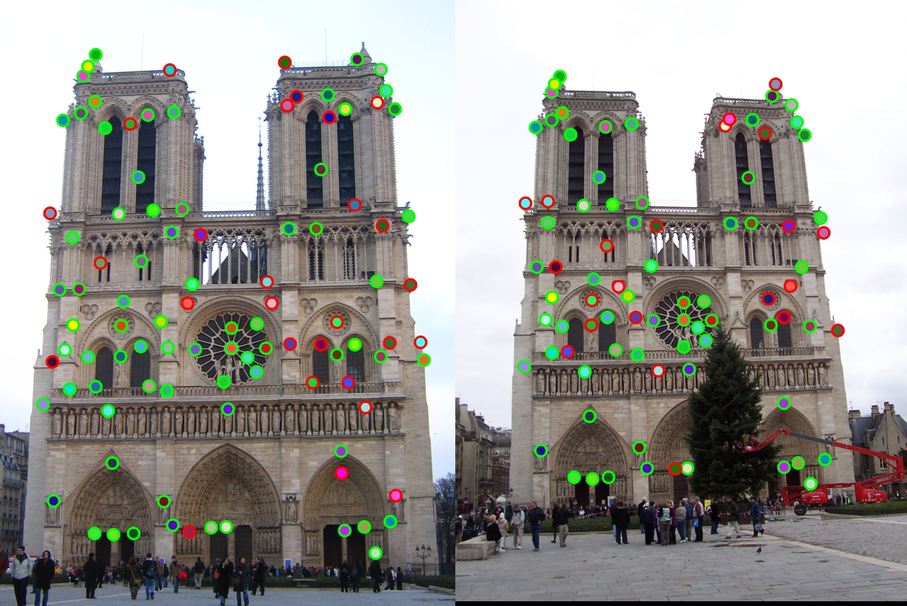 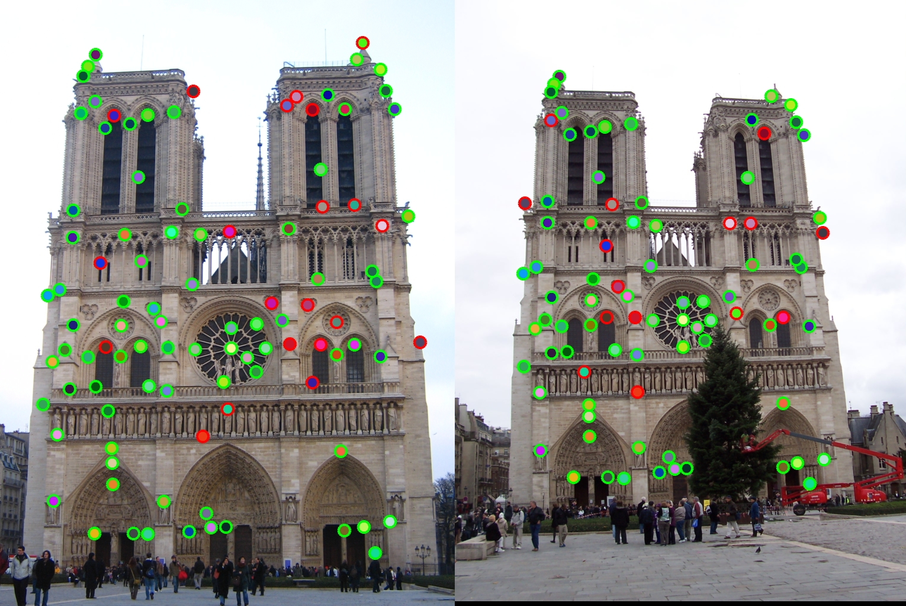 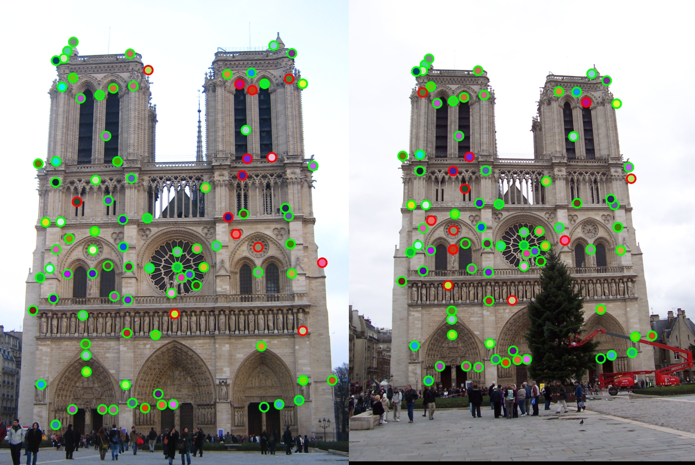 |
| 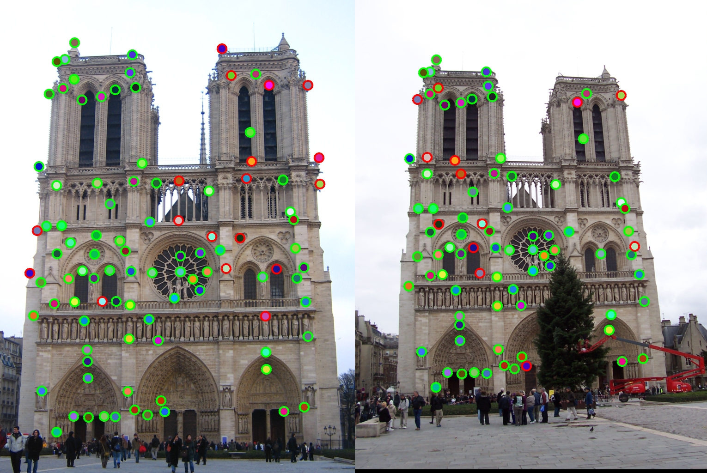 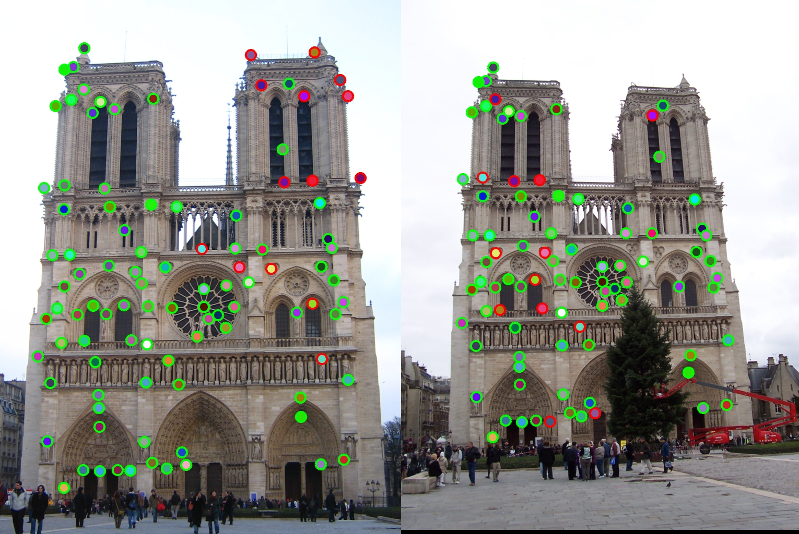 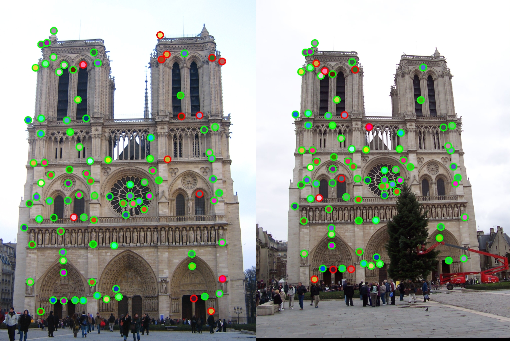 |
The feature_width affects the accuracy of the matches. If the width is too small, the local feature cannot describe the feature precisely enough, but if the width is too large, it is hard to find matches.
The matches are generated with cheat_interesting_points. From left to right, from top to bottom, I increased the size of the feature_width.
| 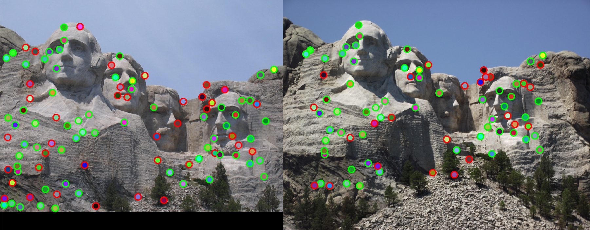 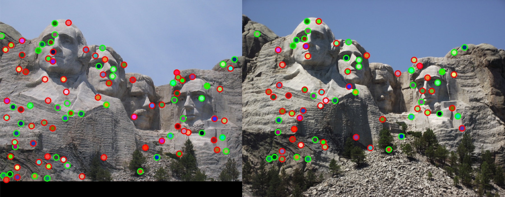 |
| 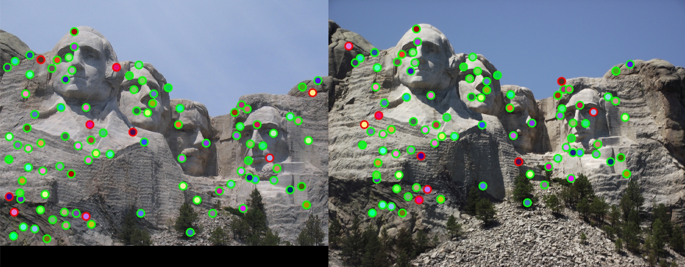 |
The matches are generated with cheat_interesting_points. From left to right, from top to bottom, I increased the size of the feature_width.
| 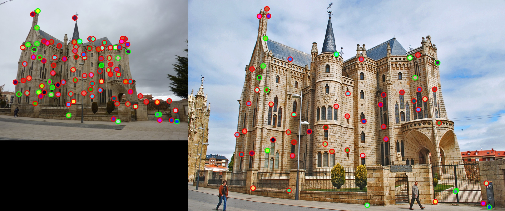 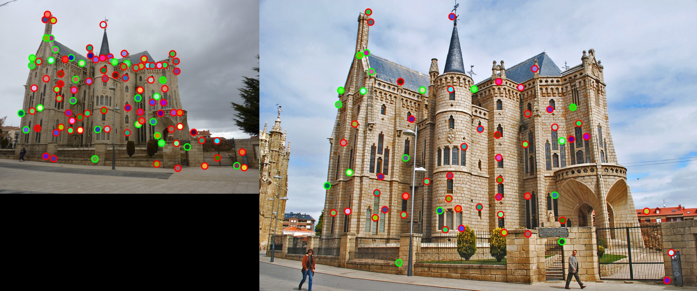 |
This test image generates lowest accuracy. I think the different size of image causes the low accuracy. If we can first resize the image to be similar. We might get better results.
I changed the number of interesting points returned from get_interesting_points by changing 5000 to 10000 and 15000.
threshold = value(5000);
[x, y] = find(nRs > threshold);
| 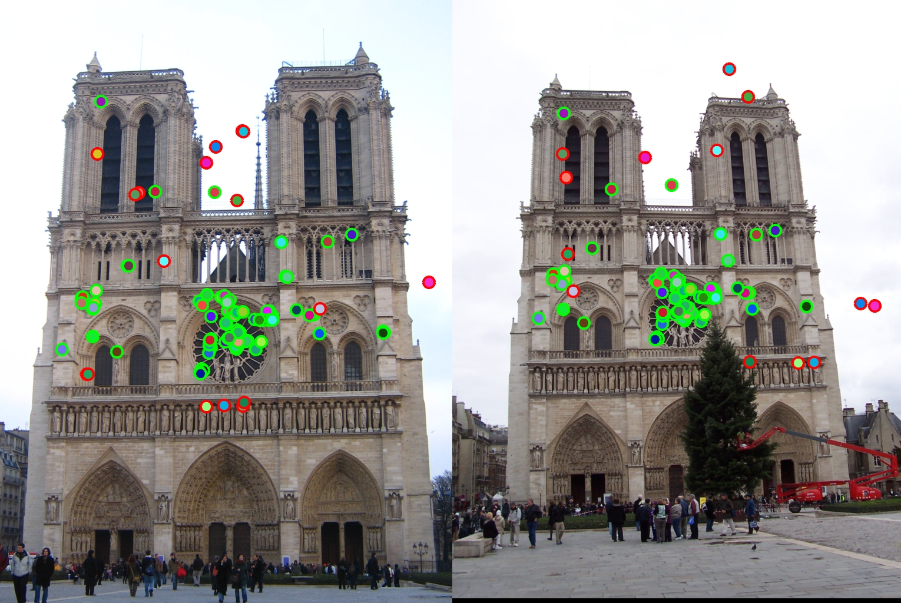 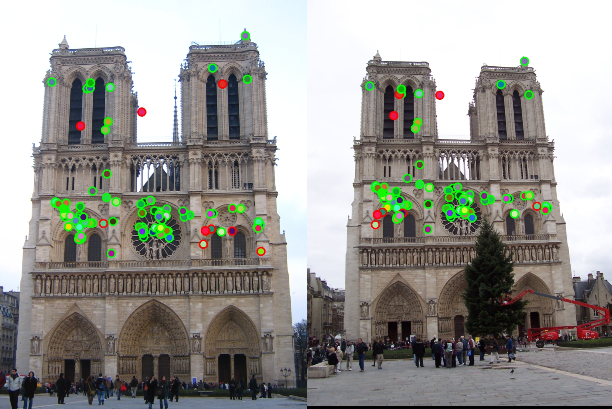 |
| 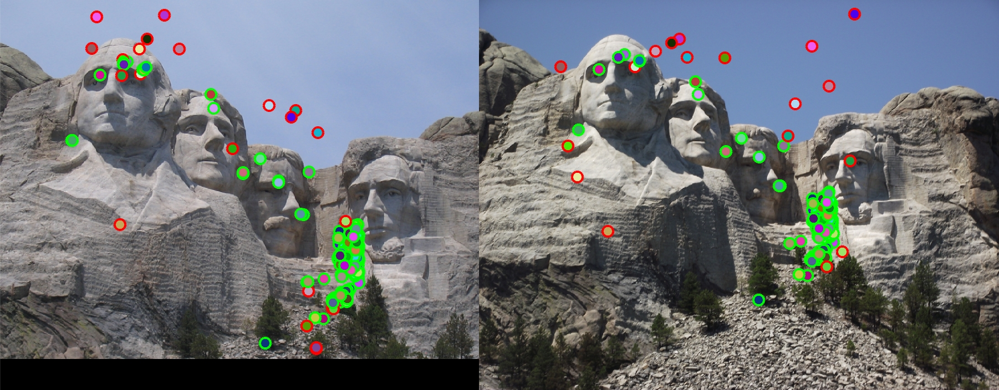 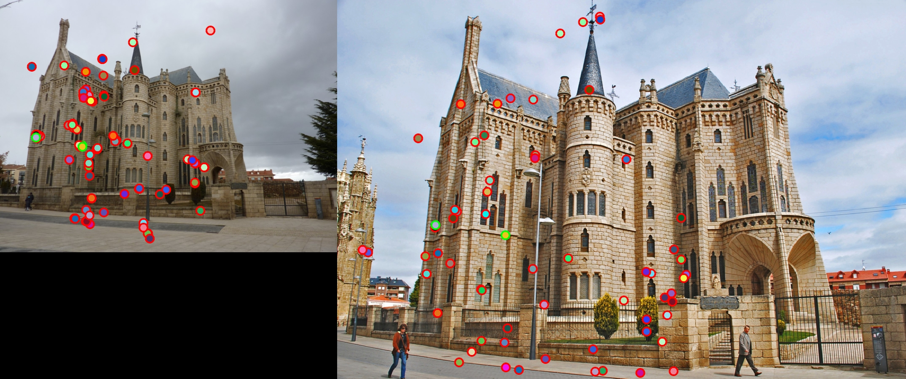 |